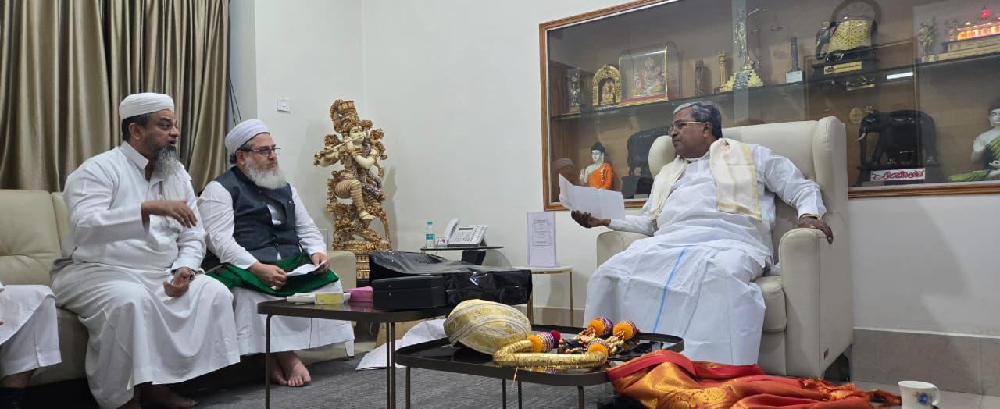
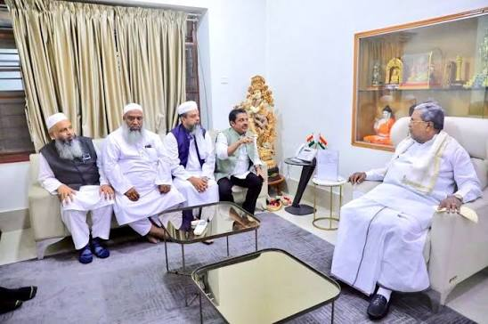

Home / Bayanath
Bayanath by Mufti Dr. Mohamed Maqsood Imran Rashadi
Lectures, Friday sermons and talks (Bayanat) by Mufti Dr. Mohamed Maqsood Imran Rashadi, Chief Imam & Khateeb of Jamia Masjid, City Market, Bengaluru, from his official YouTube channel. Read his full profile


Photo Slideshow

This photograph could not be loaded.
This photograph could not be loaded.On the official channel
On the official channel: Mufti Dr. Mohamed Maqsood Imran Rashadi
- Chief Imam & Khateeb, Jamia Masjid, City Market, Bengaluru
- Principal, Jamiul Uloom Arabic College, Bengaluru
Discover inspiring lectures, authentic Islamic guidance, and educational talks rooted in the Qur’an and Sunnah.
Islamic scholar, speaker, author, and educator dedicated to sharing Islamic knowledge with wisdom, knowledge, and compassion.